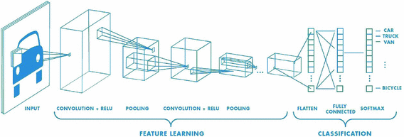

Dog Image Classification
- Category: Deep Learning
- Project date: April, 2020
- Project URL: github
Objective
I have used transfer learning and pretrained models such as VGG16, AlexNet and ResNet to classify dog breed images. The project is divided into two sub projects, first is developed with complete scripting for local use, and second is developed with AWS SageMaker for deployment.
Tech Stack
Python, AWS SageMaker, PyTorch, Pandas, Plotly
Image Classification
Image Classification is a supervised learning problem: define a set of target classes (objects to identify in images), and train a model to recognize them using labeled example photos. Early image classification tasks were performed with data driven approaches such as Nearest Neighbour Classifier. These were not so effective approach because it consisted of compairing the image under consideration with each of the images in training data. The metric used were L1 and L2 distances. Convolution Neural Networks yield better results in classifying images as compared to traditional linear classification algorithms. Hence I have used CNNs, and that too pretrained neural network such as VGG16, AlexNet and ResNet, with the transefer learning approach.

Transfer Learning
Transfer learning approach, is utilizing the selected pretrained network and then adapting of neural network to a new (similar) dataset. The approach keeps all the convolutional layers but replacing the final fully connected layers with another neural network. The base network "transfers" the learnt features to targeted network.
